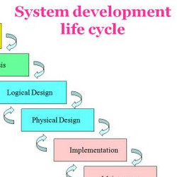
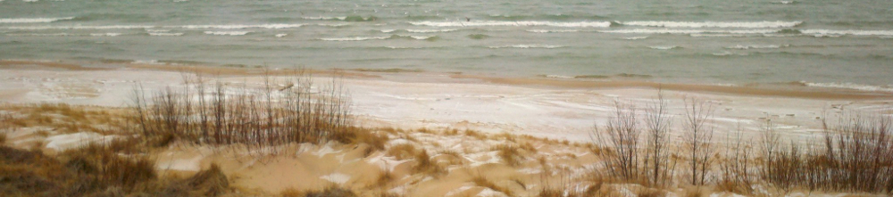

My projects Display Page
As a Full Stack Engineer I believe that it is vital for me to keep a varied project load at all times. Without the ability to switch between different types of web stacks, I would not be a true Full Stack Engineer. Below is a link to my projects display page where you can see just how varied (and long) my list of projects is!
My Online resume shows how many programming languages I know, and where my prefence for each of them lies. Like my list of projects my resume covers a large list of different types of expereience. Much like my varied projects list keeps my skills up to date, my varied resume ensures that my foundation has me extremely prepared.
The list of my frameworks is...
For those that are super curious, you can also check out what I do with what little free time I have not taken up by my passion for my career. Use the link below!
I hope that I was able to show you something about me that you came here looking for! I will keep this page updated often so plesae feel free to come back and keep up to date on all of my doings!